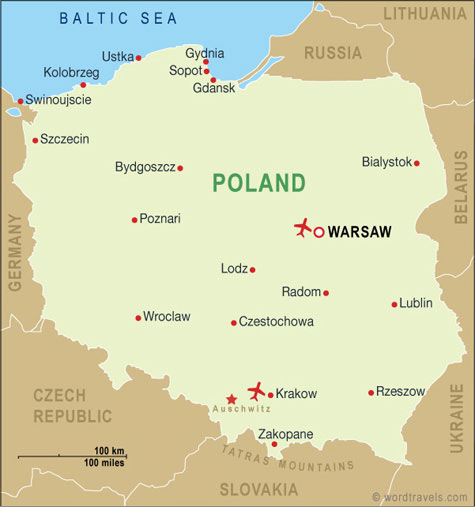

Poland background information
Some important information about Poland that could impact travel arrangements.
Figure: Map of Poland
Capital: Warsaw
Time: Poland is seven hours ahead of Minnesota. For example, if it's 1:00 p.m. in Minnesota, it will be 8:00 p.m. in Poland.
Weather: Poland climate is typically cold during the winter and warm during the summer, and greatly influenced by oceanic air currents from the west, cold polar air from Scandinavia and Russia, as well as warmer, sub-tropical air from the south.
Languages: Polish is the main language with English being the most common sencond langauge studied and spoken.
Currency: Poland's currency is the Polish Zloty (PLN). Currently, the conversion rate is 1 U.S. dollar to 4.178 PLN.
Transportation: Travel by means of rail, road, marine shipping, and air travel. Since 2004, Poland has invested a lot in modernizing their transportation networks.
Traditional foods: Polish cuisine shares similarities with Germany and Austria especially, but also Jewish, Belarusian, Ukrainian, Russian, French and Italian culinary traditions. It's rich in meat (pork, chicken, and beef) and winter vegetables (cabbage), and spices. The Polish national dishes are bigos, pierogi, kielbasa, kotlet schabowy, breaded cultlet, sour cucumber soup, and tripe soup among others.
Traditional drinks: Traditional alcohol beverages include honey mead, beer, wine, and vodka. Popular non-alcoholic drinks include tea, juices, soft drinks, buttermilk, soured milk, and kefir.
Population: Rougly 38,544,513 inhabitants, which is the 8th largest population in Europe. There's roughly 328 people per square mile.
Political leader(s): Poland is a representative democracy and Andrzej Duda is the President and Beata Szydlo is the Prime Minister.
Religions: There was a large Jewish population prior to World War II; however, now the overwhelming majority of people are Roman Catholic. Freedom of religion is guaranteed.
Healthcare system: Based on an all-inclusive insurance system. All medical service providers and hospitals are subordinate to the Polish Ministry of Health. The Hospitals are organized according to the regional administrative structure, so most towns have their own hospital. Most hospitals are modern and have been recently updated.
Major industries and imports/exports: Poland's industrail base suffered greatly because of World War II. Today, their main concentrations are on fertilizers, petrochemicals, machine tools, electrical machinery, electronics, car manufacturing, and shipbuilding. Their main imports are capital goods needed for industrial retooling and for manufacturing inputs. The most successful exports are furniture, foods, motor boats, light planes, hardwood products, casual clothing, shoes, and cosmetics.